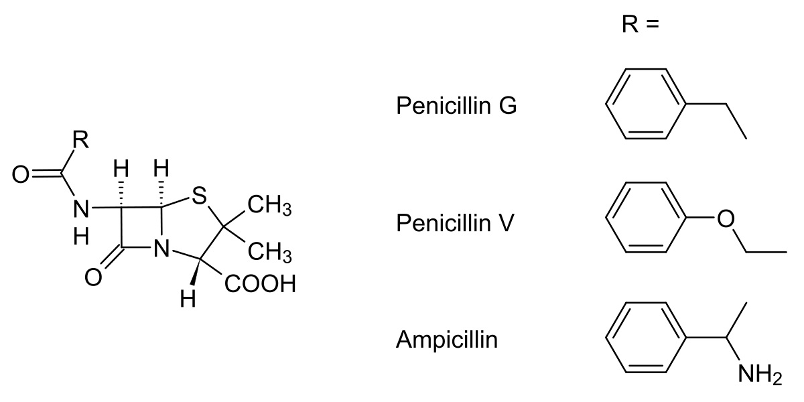

MARI INVENTII ALE LUMII
Medicina
Până la descoperirea primelor antibiotice, rănile infectate sau bolile infecţioase precum sifilisul erau de multe ori fatale. În aproape un secol,
penicilina a salvat sute de milioane de vieţi.Penicilina se foloseşte astăzi fie injectabil (penicilina F), fie sub formă de pastile (penicilina V). Acest antibiotic are un
spectru relativ restrâns, acţionând de obicei împotriva germenilor gram-pozitivi, cum sunt bacilul difteriei, gonococul, listeria, meningococul, pneumococul,
stafilococul sau streptococul.
Astfel, penicilina se recomandă în tratamentul unor infecţii precum meningita, pneumonia, faringita, bronşita, amigdalita, endocardita
bacteriană, sifilisul, blenoragia şi în reumatismul articular acut. Cu toate acestea, în urma administrării necorespunzătoare, unele tulpini de bacterii au dezvoltat în prezent
rezistenţă la penicilină. De aceea, este indicată realizarea unei antibiograme înainte de administrare. Citeste mai mult despre aparitia penicilinei ...
  |
Insulina Este un hormon, secretat de insulele lui Langerhans, ce participă la metabolismul glucidelor. Insulina este cel mai important hormon în metabolismul
glucidelor. Insulina contribuie în primul rând la micșorarea concentrației glucozei în sânge. Aceasta mărește permeabilitatea membranei celulare pentru glucoză.
Insulina are o acțiunea antagonistă glucagonului.Laguesse în 1893 și Leonid V. Sobolev în 1899 au sugerat că insulele lui Langerhans (descoperite de acesta în 1869)
produc o substanță care controlează metabolismul carbohidratilor.
Această substanță a fost numită "insulină" de belgianul Jean de Meyer în 1909. |
Demonstrarea prop. penicilinei de catre savanti : - În 1903 John Rennnie și Thomas Fraser au încercat fără succes un tratament oral cu cu extras de cod (care are insulele separate de pancreasul exocrin).
- În 1904 au încercat injectarea hipodermică la om, dar au renunțat datorită efectelor secundare.
- În 1906 in Berlin Georg Zuelzer a aplicat metoda precipitării proteinelor din extrasul pancreatic cu alcool și a testat acest tratament pe 8 pacienți, constatând eliminarea
glicozuriei și cetonuriei, dar au renunțat din nou datorita efectelor secundare. - În 1908 Ernest Scott a obținut reducerea glucozei urinare la 3 câini cu extras de pancreas tratat cu alcool.
- Efectul hipoglicemiant al unui extract pancreatic injectat intravenos la câinele pancreatectomizat a fost demonstrat de Israel S. Kleiner (1915, 1919). Efectul unui extract
pancreatic asupra corpilor cetonici și ureii (substante produse în diabetul zaharat dezechilibrat) a fost demonstrat de Nicolae Paulescu (1921). - În 1921, Frederick Grant Banting și Charles H. Best au demonstrat tratamentul la om cu insulina în timp ce lucrau în laboratorul lui John J.R. Macleod la Universitatea din Toronto.
Banting și Best au extras material din pancreasul câinilor. Acest material a fost folosit pentru a menține în viață câini, iar în 1922 a fost folosit cu succes pe un băiat de 14 ani cu diabet.
- În 1923 chimistul James B. Collip a descoperit ca purificând extractul poate preveni multe din efectele secundare. În 1923 Banting și Macleod au primit Premiul Nobel. Best și Collip
au fost omiși, dar Banting și Macleod au împărțit banii cu ei. Insulina a fost primul hormon sintetizat complet în laborator, în 1966 de către americanul Michael Katsoyannis și
cercetători chinezi.
Transplantul - în transplantul de medicamente de orice organ sau țesut , de exemplu, rinichi , inimă , ficat , plămân , măduvă osoasă , celule stem hemopoietice , păr .
Organismul din care organele sau țesuturile sunt transplantate se numește donator.
Organismul la care sunt transplantate țesuturi sau organe este numit primitor.
Pentru a desemna transplantul unui transplant, se folosește termenul "re-transplant".
Există transplanturi experimentale și clinice. Transplantul experimental este necesar ca o etapă preclinică de dezvoltare a tuturor problemelor biologice, chirurgicale
și organizatorice ale transplantului anumitor organe sau țesuturi . În experiment, aproape toate țesuturile și organele sunt transplantate . Transplantul experimental este necesar
pentru studierea ulterioară a reacțiilor imunitare din partea beneficiarului după transplantul organelor și țesuturilor donatoare . Transplantul experimental este extrem de
important pentru dezvoltarea de noi medicamente ( ciclosporină), contribuind la adaptarea normală a organelor și țesuturilor transplantate distincte genetic.
Tipuri de transplant ----->
IT
Privire înapoi în 1971. China intra în Natiunile unite. Cei de 18 ani dobândesc dreptul de vot în SUA. Apare un "calculator-întru-un-cip" care e destul de mic si destul
de ieftin pentru a intra într-o scula pentru afaceri, o jucarie, un aparat, o unealta - pe scurt în orice are o vaga legatura cu electricitatea.
De-atunci lumea nu mai e aceeasi.
Azi, datorita microprocesoarelor ce i-au urmat lui Intel 4004 din 1971, suntem mai informati, mai eficienti si, într-un mod obscur, mai lipsiti de intimitate decât acum 25 de ani.
Deoarece microprocesoarele au devenit în asa masura parte a vietii noastre, adevarata provocare a ajuns sa fie gasirea unor aparate din jur care sa nu fie într-un fel sau altul controlate
de un calculator. Calculatoarele mici si relativ ieftine au facut practic posibila urmarirea oricarei activitati umane, analiza oricarui proces si controlul oricarui mecanism.
Sarbatorind cea de-a douazecime aniversare a microprocesorului, sa nu uitam ca aceste calculatoare proceseaza doar date: cunoasterea este altceva. Directia de finante poate rula
duzini de modele financiare pe calculator, tot oamenii vor decide daca dobânzile vor creste sau scadea. La fel, ani de cercetare în inteligenta artificiala au produs algoritmi care se pot
adapta în situatii bine definite, dar numai oamenii au abilitatea de-a întelege si glumi.
Voi prezenta în continuare câteva din marile schimbari provocate de microprocesoare în lumea noastra. Toate indica un fapt indiscutabil: orice privire asupra impactului
microprocesoarelor asupra lumii noastre reprezinta o farâma de timp. Revolutia continua.
În trecut, documentele private erau protejate atât de bine pe cât le puteai tine undeva închise. Azi criptarea electronica protejeaza informatia pe unitatile de disc astfel încât numai
persoanele autorizate sa poata citi datele secrete.
Dar criptarea creeaza de asemenea posibilitatea ca unii criminali sa ascunda electronic dovezi importante. În SUA oficialitati ce impun legea federala doresc sa introduca un plan
pentru toata lumea de a da o copie tuturor cheilor de criptare guvernului, care le va tine secret, cu exceptia cazului când este necesara citirea unor date criptate. Dupa aceste oficialitati,
amenintarea criptarii este atât de serioasa încât guvernul SUA ar trebui sa-ti continue lupta împotriva exportului de tehnologie de criptare în afara granitelor sale.
Criptarea va asigura totodata si sprijinul unui comert electronic foarte raspândit, ce ar putea da consumatorilor acces nelimitat pe o piata mondiala. Nu e mai putin adevarat ca
intimitatea noastra va putea fi asaltata de companii de carti de credit, banci si altii, care vor putea usor sa-si constituie dosare detaliate despre stilul nostru de a cheltui. De exemplu,
cei ce angajeaza pot refuza explicit sa angajeze fumatori datorita posibilului cost al asistentei sociale pentru acestia.
În fiecare zi tomografele computerizate (CT) din spitalele lumii salveaza vieti prin ilustrarea tridimensionala a interiorului corpului nostru. Microprocesorul nu e singurul tip ce
calculator care poate rezolva matematica necesara construirii acestor imagini 3D, dar ele sunt raspunzatoare pentru recenta proliferare a scanerelor CT.
Termenul computer personal numit și calculator personal (în engleză: personal computer sau PC, pronunțat /pi si/, v. AFI) desemnează un anumit gen de computer, relativ
mic ca dimensiuni și performanță, pentru uz personal.
Se face deosebirea între următoarele semnificații posibile
Încă din anii 1980 majoritatea calculatoarelor mici sunt PC-uri, deci compatibile din punct de vedere hardware cu PC-urile inițiale ale firmei IBM care se numeau
xIBM PC. Ele folosesc procesoare fabricate de firmele AMD sau Intel, desigur însă mult mai rapide decât cele folosite inițial de IBM.
O caracteristică distinctivă este modularitatea PC-urilor: chiar fără a fi specialiști, utilizatorii pot modifica, extinde sau schimba cipurile de memorie, placa de bază,
plăcile de extensie, discurile dure și chiar și sistemul de operare.
Din punctul de vedere al hardwareului există multe modele și tipuri constructive de PC-uri. Printre modelele constructive actuale de succes (în 2011) se numără de
exemplu cele de tip „PC tabletă” (din engleză de la Tablet PC) - v. și articolul Calculator tabletă.
Numărul de PC-uri aflate în uz în lume a depășit pragul de 1 miliard în iunie 2008.
Prin contrast, există și computere personale mici, portabile, care nu sunt PC-uri (au o altă arhitectură decât calculatoarele personale de tip PC). În ziua de azi ele sunt
fabricate de ex. de către companiile Apple (familia de calculatoare Macintosh), Hewlett-Packard, RIM, SGI, divizia Sun Microsystems a companiei Oracle și altele.
De asemenea, strict vorbind, nici aparatele „inteligente” de tip smartphone și nici unele computere tabletă ca de ex. iPad, nu sunt PC-uri, deși aparțin marelui domeniu de
calculatoare personale.
Robotehnica
Un robot este un operator mecanic sau virtual, artificial. Robotul este un sistem compus din mai multe elemente: mecanică, senzori și actuatori precum și un mecanism
de direcționare. Mecanica stabilește înfățișarea robotului și mișcările posibile pe timp de funcționare. Senzorii și actuatorii sunt întrebuințați la interacțiunea cu mediul
sistemului. Mecanismul de direcționare are grijă ca robotul să-și îndeplinească obiectivul cu succes, evaluând de exemplu informațiile senzorilor. Acest mecanism reglează
motoarele și planifică mișcările care trebuiesc efectuate. Roboții cu formă umană sunt numiți androizi.
Roboții sunt realizați mai ales prin combinația disciplinelor: mecanică, electrotehnică și informatică. Între timp s-a creat din legătura acestora mecatronica. Pentru realizarea
de sisteme autonome (care să găsească singure soluții) este necesară legătura a cât mai multor discipline de robotică. Aici se pune accent pe legătura conceptelor de inteligență
artificială sau neuroinformatică (parte a informaticii) precum și idealul lor biologic biocibernetică (parte a biologiei). Din legătura între biologie și tehnică s-a dezvoltat bionica
|
Tipuri de roboti
---------> |
|
|---|
Marandici Cristian IA-203